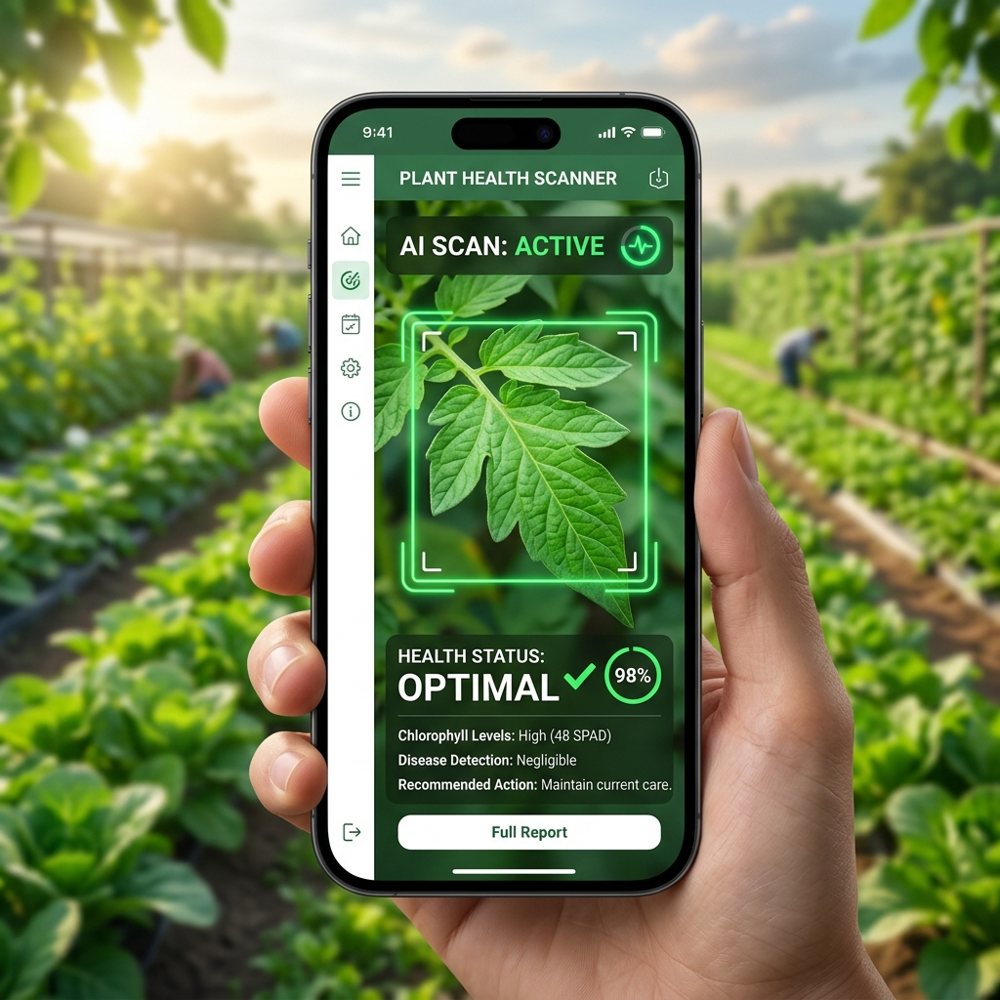

Smart Farming,
Better Future.
An AI-powered mobile app designed to help farmers make data-driven decisions, increase productivity, and reduce crop losses in real-time.
98%
Scan Accuracy
50k+
Active Farmers
25%
Yield Increase

Challenges in Modern Agriculture
Traditional farming practices face unprecedented difficulties. Here are the key pain points modern farmers face daily.
Unpredictable Weather
Sudden rainstorms, droughts, and changing climate cycles make planning irrigation and harvests a risky guessing game.
Crop Disease Identification
Identifying pests and diseases early is difficult, leading to late intervention and severe yield loss.
Incorrect Fertilizer Usage
Using excessive or incorrect fertilizers damages soil health, wastes money, and lowers overall crop quality.
Opaque Market Pricing
Lack of live market pricing leaves farmers at the mercy of middlemen, reducing profit margins.
How Smart Farmer Assistant Works
We combine artificial intelligence with localized agricultural data to put expert knowledge directly into your hands.
AI Crop Disease Detection
Upload a photo of your leaf and let our AI instantly diagnose crop health and outline remedies.
Weather Forecast & Alerts
Receive localized hourly rain forecasts and smart reminders of the best harvesting window.
Fertilizer Recommendation
Input your soil parameters to get exact fertilizer schedules and usage guides.
Market Price Information
Access real-time crop rates in local Mandis to ensure you sell at the best profit margins.
Disease Detection Result
Select a crop leaf above to run the simulated AI diagnostic scan.
Select a crop from the features to see weather tailored suggestions.
Recommended Mix
Powered by Advanced Technology
We blend cloud computation and edge artificial intelligence models to deliver actionable advice with minimal file size and low network requirements.
- ✓ Boosting farmer incomes through optimized yield
- ✓ Aligning with Digital India initiative to connect rural sectors
- ✓ Promoting smart, eco-friendly, and sustainable agriculture
AI Diagnostics
Runs lightweight deep learning models locally or in the cloud for instant disease detection.
Weather APIs
Connects to hyper-local weather satellites to provide dynamic regional forecasting alerts.
Cloud Databases
Synchronizes pricing details and soil tables with secure database nodes.
GPS Tracking
Detects soil zones and weather grids automatically using localized GPS coordinates.
Why Smart Farmer Assistant?
Designed with simplicity and accessibility in mind, helping farmers secure higher yields at reduced costs.
Early Disease Detection
Recognize leaf spots, rusts, and blight symptoms before they spread to the entire crop fields.
Better Crop Yield
Apply soil-specific fertilizers and irrigate crops at scientifically optimal hours to maximize harvesting size.
Reduced Farming Costs
Prevent fertilizer wastage and avoid pesticide purchases by targeting only identified diseases.
Increased Profits
Monitor market pricing variations in real-time, eliminating crop margins claimed by unverified middlemen.
What's Coming Next
We are continuously working to expand our services. Here are the upcoming features planned for release.
Regional Voice Support
Implementing voice commands and dictation feedback in Hindi, Marathi, and Kannada, lowering barriers for farmers who cannot read standard text.
Soil Testing Integration
Partnering with district laboratories to allow uploading local soil reports directly, allowing our algorithms to calibrate customized chemical recipes.
Government Scheme Updates
Instant notifications and simple summaries of government agricultural policies, subsidies, and state crop welfare applications.
Direct Buyer Connection
Enabling a direct negotiation panel between bulk grain dealers, food companies, and farmers to ensure fair trade parameters.
24/7 AI Farming Chatbot
Integrating large agricultural language models that can solve localized queries (e.g. soil insects, fertilizer ratios) through direct chats.
Join the Smart Agriculture Revolution Today.
Optimize crop cycles, identify diseases, and maximize your farm revenue. Install the KisaanAI app on your smartphone now.